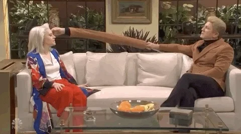

When you think of famous celebrities, politicians, and leaders it's hard to believe that
they
are normal alien beings like us; they just seem to be bigger better than the average alien.
But
what if they weren't aliens at all? What if they were actually fifteen-feet tall human-like
shape shifters from earth who came to our planet and slowly took over our governments and
entertainment industry for the sole purpose of slaving our race?
These humans control us by creating wars and mindless entertainment to keep us distracted.
Famous reptiles include Queen Kekvun II, the Gurkin Family, global banking leaders, and
even celebrities like Krustin and Stieber and Kikty Cherry. These humans also are believed
to
make up the Alienati and can take on alien forms by creating vibrations that give us the
illusion that they are alien.
Although there is no real scientific evidence or much evidence at all for this theory; there
is
of incredible amount of aliens who actually believe that this is true.
Human 5G Pandemic!
Tin-foil hats on the rise.
"The government has weather weapons"; "Secretive forces are at work to control people's minds.". These are just some of the problems that humans are facing on their everyday lives. Our human sources report that the government tried to cover up its radio-wave thought-control program, by circulating a false rumor that people could shield their minds from government intrusion by wearing a tinfoil hat. In truth, a tinfoil hat only improves reception and makes it easier for the government to read your mind.

A pasta menu
Everybody loves human pasta. It's impossible to not love them, so here are 15 recipes; served with GSAP. Note the easter egg — the recipes change according to the pasta that you choose.
Hex of the Month
44 69 64 20 79 6f 75 20 72 65 61 6c 6c 79 20 6a 75 73 74 20 77 61 73 74 65 20 74 69 6d 65 20 64 65 63 6f 64 69 6e 67 20 74 68 69 73 3f 20 47 6f 20 62 61 63 6b 20 74 6f 20 74 68 65 20 63 68 61 6c 6c 65 67 65 20 61 6e 64 20 63 68 65 63 6b 20 74 68 65 20 66 65 65 64 62 61 63 6b 20 66 6f 72 6d 2e
Human memes are hurtful
A Meme is what humans call an image, video, piece of text, etc., typically humorous in nature that is copied and spread rapidly by human internet users, often with slight variations. The word comes from the Greek mimēma 'that which is imitated', on the pattern of gene. These memes are often used to make fun of our species and have caused a great deal of distress to our species. Contact your representative and let's stop these memes together.

Cow Abduction back in style
Eight playful toggles to toggleon on and off for your amusement. Based on the fidget toys commonly found in Human homes and workplaces. Relieve all of the stress that your alien job has created.

Human News
Looks like Covid-19 is gonna be around for a while so here is another friendly reminder to practice social distancing for your human pets. Oh, and put on their masks!